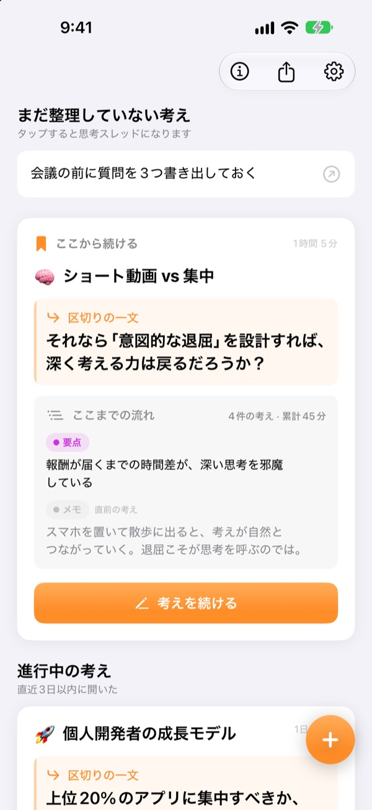
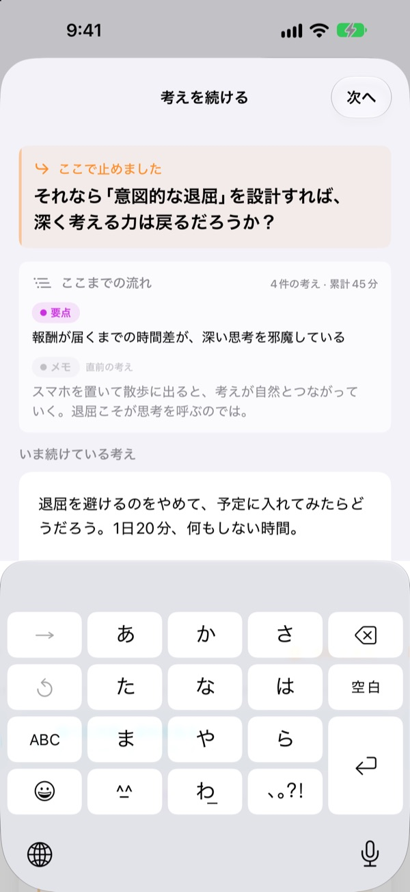
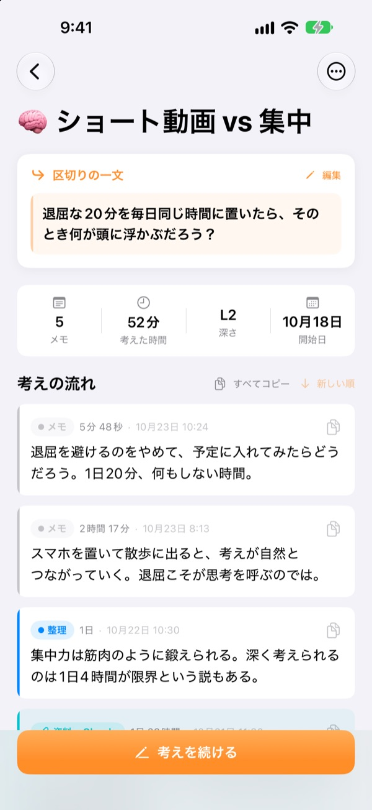
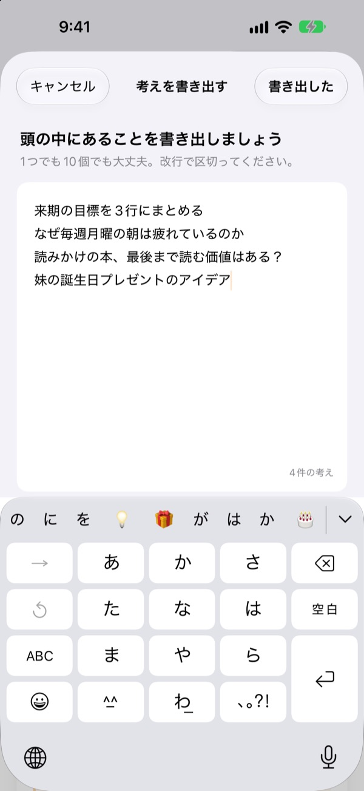

昨日の考えの続きを、
今日そのまま
考えるのをやめるとき、続きの一文を残しておきましょう。次に開くと、その一文がいちばん上で待っています。
すべての機能が無料です。アカウント不要で、デバイスの中だけに保存されます。

一文を残してみる
考えを一行書いて、次に続ける一文を残してみてください。アプリと同じ流れで動きます。
あれ、どこまで考えたんだっけ？
数日前のメモを開いても、残っているのは結論らしき数行だけ。その先で何を考えようとしていたかは消えていて、結局また一から考え直すことになります。ThinkFlowは止めるときに次の問いを残させるので、開いた瞬間からその問いの続きを考えられます。
区切りの一文がいちばん上で待っている
考え終えるときに、次に続ける問いを一行だけ残します。次に開くと、その一文とこれまでの要点、直前の考えが1枚のカードにまとまっているので、どこまで考えたか思い出す必要がありません。
ホーム画面のウィジェットにも区切りの一文が表示され、考えている間はロック画面とダイナミックアイランドに時間が出ます。

メモが要点になるまで
書いた考えを、メモ・整理・要点・要約の4段階で引き上げていきます。考えがどこまで熟したか、ひと目で分かります。
調べたことや質問した内容は資料として貼るので、自分の考えと混ざりません。

まず頭の中を空にする
浮かんだことを1行ずつ全部書き出してから、いま考えたいものを1つ選ぶと、それが考えのスレッドになります。残りはホームに保管され、タップすればいつでも続きを考えられます。
3日以上触れていない考えは「よみがえらせたい考え」にまとまります。

始め方は3ステップ
- 1
考えを書き出す
1行ずつ書いて、育てたいものを1つ選びます。
- 2
続きを考える
考えが変わるたびに分けて追加すると、あとで整理しやすくなります。
- 3
一文を残して閉じる
次に開くと、その一文から始まります。
整理の段階
- メモ
- 生の考え
- 整理
- 一度整理
- 要点
- 要点だけ
- 要約
- 最終要約
考えの横にある段階バッジをタップすると変えられます。要点と要約は、次に開いたときカードに先に表示されます。
区切りの一文がいちばん上で待っている
区切りの一文は必ず書かないといけませんか？
何か書いた場合は、はい。「考えを続ける」画面は、続きの一文を残すと閉じられます。何も書いていなければそのまま閉じられます。行き詰まってからではなく、まだ書けることがあるうちに区切るのがコツです。
「よみがえらせたい考え」とは？
3日以上開いていない考えは、ホームの「よみがえらせたい考え」に別にまとまります。忘れかけていた考えも、区切りの一文から続きを始められます。
不具合の報告や機能の提案をしたいです。
アプリの設定にある「フィードバックを送る」から送るか、下のメールアドレスかGitHub（github.com/M1zz/ThinkFlow/issues）にお寄せください。どんなことでも歓迎です。
本当にすべて無料ですか？
はい、すべての機能が無料です。広告もアカウント登録もありません。設定の「開発者を応援する」はお好みで、しても機能は変わりません。
ご質問やご意見は leeo@kakao.com までお寄せください。